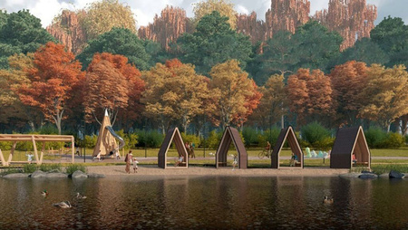
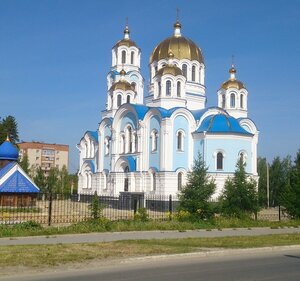

Развитие города за последние 15 лет и планы на будущее
За последние 15 лет в Заречном стало значительно комфортней.Реализован ряд
успешных проектов благоустройста,например:
-
Таховский бульвар
раньше,Таховский бульвар был лишь
пешеходной улицей с фонарями,но теперь это не просто улица,а настоящий
бульвар.Там построили несколько площадок,зону для баскетбола,спортивную
зону и зону для отдыха,где можно посидеть и поболтать.
-
Экопарк
экопарк ещё не завершили,но его большая часть
уже открыта.Он находится на набережной Белоярского водохранилища.В нём
построили мосты, множество площадок и беседки.

-
Храм Покрова Пресвятой Богородицы
до его постройки в
Заречном был только один храм-Храм во имя Святителя Николая Чудотворца.Но он не вмещал в себя всех прихожан.
В 2001 году было принято решение построить второй храм,но достроили его в 2016 году.

В Заречном планируется несколько проектов, но ключевым из них является
постройка нового энергоблока на АЭС, кроме него реализуются ещё несколько
проектов,например:
Спортивный комплекс с ледовой ареной
Заключительная часть экопарка
Скейт-парк
Оборудование лыжной трассы
Единый пеший маршрут через таховский бульвар, экопрак и пешеходную аллею
с каскодной лестницей
10-метровый маяк и полигонные фигуры животных на Белоярском
водохранилище
Новый энергоблок №5 на Белоярской АЭС
У него будет рекатор БН-1200М и это будет первый в мире реактор на быстрых
нейтронах поколения 4!Его запуск укрепит лидерство России в атомной
энергетике и является шагом к созданию двухкомпонентной энергетики с
замкнутым ядерным топливным циклоном, что позволяет многократно испльзовать
топливо и минимизировать отходы. Заречный-это процветающий город-спутник
АЭС.Он активно благоустраивается-появляются современные парки, спортивные
объекты и комфортные общественные пространства.